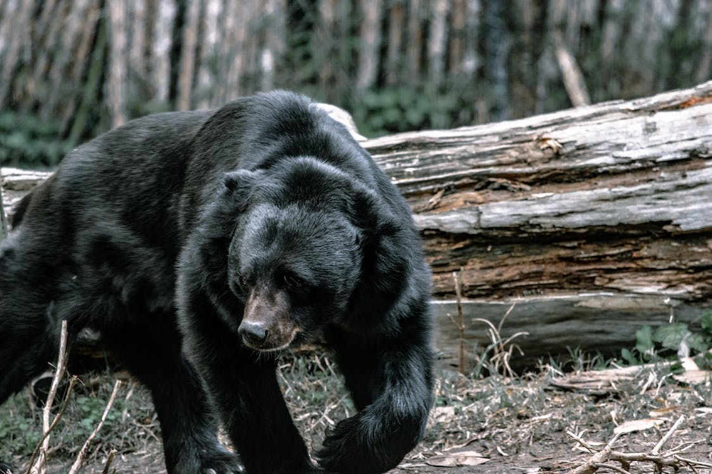
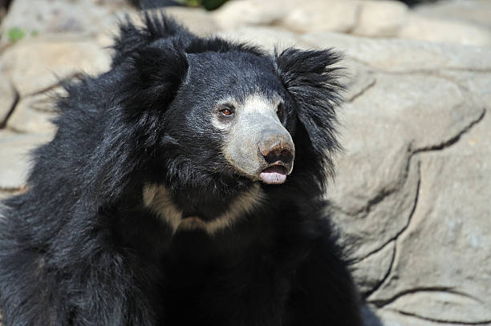
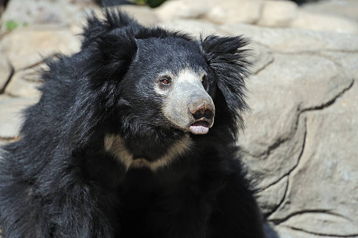
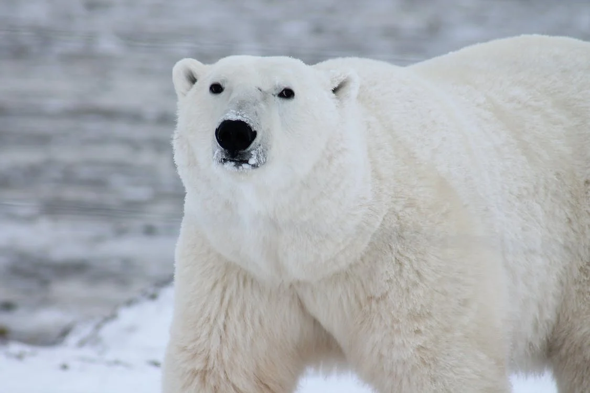
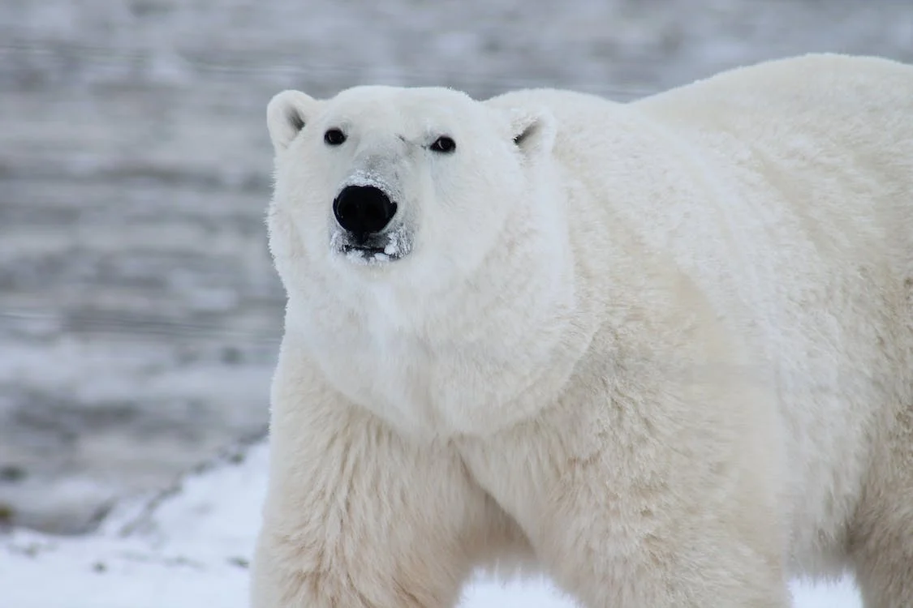
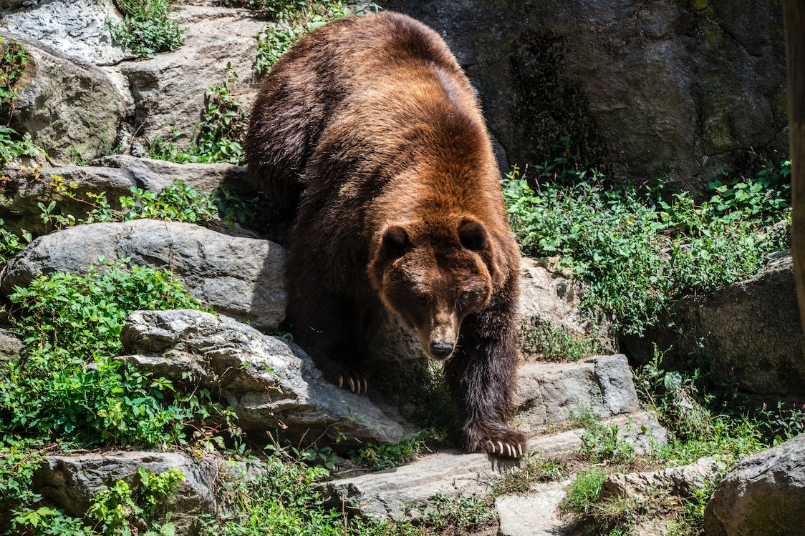
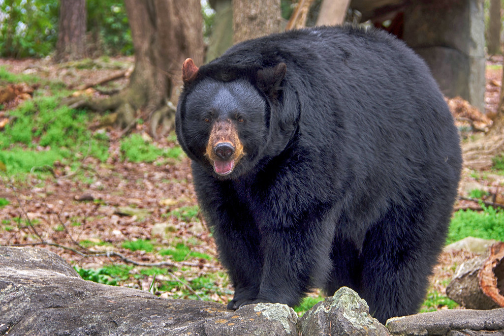
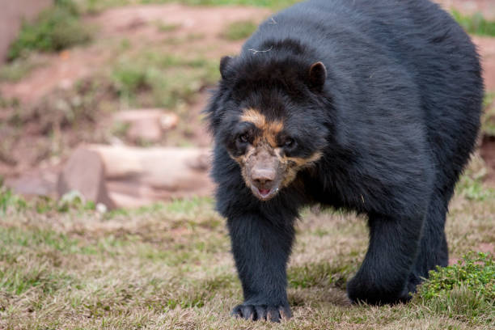

Overview
Purpose
To provide a semi series and humorous evaluation of the different classes of bears
Audience
Predominantly would mostly be geared towards people who are bored and want some time to kill The 8-16 age range where random information about animals is still cool.
Branding
Website Logo
Style Guide
Color Palette
Palette URL:
https://colorkit.co/color-palette-generator/d9d0b4-a98467-8097be-6c584c/| #d9d0b4 | #a98467 | #8097be | #6c584c |
|---|---|---|---|
| ##d9d0b4 | #a98467 | #8097be | #6c584c |
Typography
Heading Font: Chewy
Paragraph Font: Comfortaa
Normal paragraph example
I like Bears, there are 8 kinds of bears. North American Black Bear, Asiatic Black Bear, Brown Bear, Polar Bear, Panda Bear, Sun Bear, Sloth Bear, and Andean Bear. Though I love all bears, it is important to see how the compare to one another.
Colored paragraph example
While formitable creatures and very dangerous I have always been facinated by bears. I like all bears but I think it is time that someone decided offically which bear is best. I will do that, probably.
Navigation
Site Map
Content
Home page
We will be ranking bears based exclusively on viability, which is to say how effective they are at living. We will consider multiple different aspects across all 8 types of bears before assigning a score out of ten based on how viable I believe the bear to be. The main page will then have all eight bears and a smaller blurb about them along with an image of each.
Images for the Home page

 

 


The Specilists
In depth information on the Specialist style of Bear, The Panda, Sun Bear, Sloth Bear and Polar Bear. It will include the specifics of how they live and their characteristics as well as my 100% accurate ranking
Images for the Page 2


The Generalists
The information about the Generalist bears: the Black bears, Brown Bear, and the Andean Bear. It will include the specifics of how they live and their characteristics and of course my 100% accurate ranking.
Images for the Page 3
  Wireframes
Create three wireframes for your site. One for each page and list them here
Home
[Any additional details about home that the wireframe does not make clear]
[Page 2]
[Any additional details about page 2 that the wireframe does not make clear]
[Page 3]
[Any additional details about page 3 that the wireframe does not make clear]